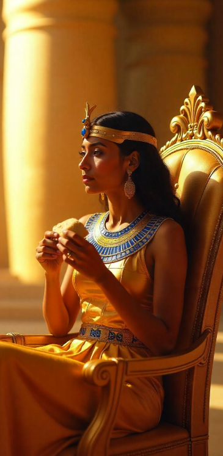

Origen
Este panecillo plano, sin levadura, es probablemente uno de los panes
más antiguos del mundo. Allá por el 3000 a.C., los egipcios ya estaban dándole a los cereales como
el trigo y la cebada, moliendo con piedras y horneando en hornos de barro. No tenían levadura
al principio, así que hacían este pan plano y práctico. Era el snack de faraones, obreros de
pirámides y aventureros del Nilo. Literalmente: pan de todos.